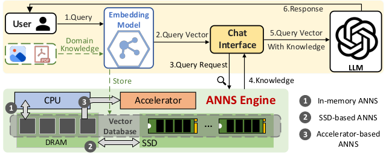
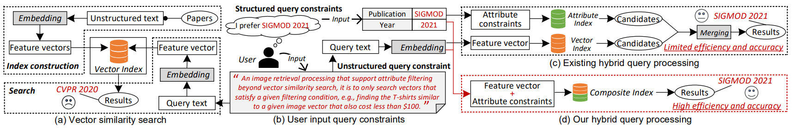

近似最近邻搜索（ANNS）
联系方式
在信息检索与机器学习中，常见的做法是将文本、图像、视频、语音等非结构化数据，通过 embedding 模型 映射到高维向量空间。此时，数据之间的语义关系可以通过 距离度量（如欧氏距离、余弦相似度） 来刻画：相似的数据点在向量空间中往往距离较近。由此引出 最近邻搜索（Nearest Neighbor Search, NNS） 问题：给定一个查询向量，召回数据集中与其最接近的点。
然而，当数据规模达到百万、甚至十亿级别，同时维度上百甚至上千时，精确最近邻搜索的代价极其高昂，无法满足低延迟应用需求。为此提出了 近似最近邻搜索（Approximate Nearest Neighbor Search, ANNS），它在保证高召回率的同时显著降低搜索时间和存储成本，成为现代 大规模向量检索系统 的核心技术。
随着 大语言模型（LLM） 与 多模态模型 的发展，ANNS 已成为其外部知识接入与语义检索的关键技术。
- 在 RAG（Retrieval-Augmented Generation） 中，ANNS 负责从向量数据库中检索相关知识，支撑 LLM 生成更准确的回答。
- 在 多模态检索 中，ANNS 为跨模态 embedding 提供统一的索引与匹配能力。

近年来，ANNS 的主流研究方法大致有以下几种：
- 基于哈希的索引（Hashing-based）：通过局部敏感哈希（LSH）等方法将相似向量映射到相同桶中，以加速候选集合的生成。
- 基于树的索引（Tree-based）：利用空间划分（如 KD-tree）实现高效剪枝，但在高维大规模场景下易退化。
- 基于图的索引（Graph-based）：构建稀疏近邻图（如 HNSW），通过启发式图搜索快速收敛到查询点的近邻。
其中，图索引方法在实践中表现最为突出，既能保持较高的召回精度，又在查询延迟与内存占用之间取得良好平衡，已成为工业界和学术界的主流选择。
- Malkov & Yashunin, TPAMI 2018. Efficient and Robust Approximate Nearest Neighbor Search Using Hierarchical Navigable Small World Graphs.
- S. Jayaram Subramanya, F. Devvrit, et al., NeurIPS 2019. DiskANN: Fast Accurate Billion-Point Nearest Neighbor Search on a Single Node.
- M Wang, X Xu, Q Yue, Y Wang., VLDB 2021. A Comprehensive Survey and Experimental Comparison of Graph-Based Approximate Nearest Neighbor Search
ANNS 混合检索（ANNS Over Hybrid Query）

研究背景
- 单一模态或单一索引难以满足真实需求，用户往往需要 多维条件结合（如“找评分最高的、同时和某主题最相关的文档”）。
- 在 RAG 场景 下，ANNS 检索的非结构化知识常需要与 数据库属性查询 或 知识图谱约束 联合，才能生成可靠答案。
- 在 多模态检索 中（文本、图像、视频、音频），ANNS 需处理 异构 embedding 并支持统一查询。
- 因此，混合检索的研究重点在于：如何在向量索引与传统数据库索引之间高效协同，实现结构化与非结构化数据的统一检索。
推荐阅读
- W. Wei, et al., VLDB 2020. AnalyticDB-V: A Hybrid Analytical Engine Towards Query Fusion for Structured and Unstructured Data.
- Y. Wang, et al., 2022. Navigable Proximity Graph-Driven Native Hybrid Queries with Structured and Unstructured Constraints.
- A. Gollapudi, et al., WWW 2023. Filtered-DiskANN: Graph Algorithms for Approximate Nearest Neighbor Search with Filters.
- M. Patel, et al., SIGMOD 2024. ACORN: Performant and Predicate-Agnostic Search Over Vector Embeddings and Structured Data.
- Z. Cai, et al., SIGMOD 2025. Navigating Labels and Vectors: A Unified Approach to Filtered Approximate Nearest Neighbor Search.
流式 ANNS（Streaming / Dynamic ANNS）
研究背景
- 传统 ANNS 系统大多为 静态索引，在构建后只适合批量查询，难以适应数据的频繁更新。
- 在 真实业务系统 中，如推荐、日志监控、搜索引擎等场景，数据是 持续到达与变化的流：
- RAG 服务：知识库需实时扩充与更新，否则 LLM 检索结果会滞后于最新事实。
- 在线推荐与风控：用户行为与风险特征不断变化，要求索引支持快速插入和删除。
- 因此，流式 ANNS 的核心挑战是同时保证 低延迟查询 与 高吞吐更新，推动了动态图索引结构和增量维护策略的发展。
推荐阅读
- W. Wei, et al., VLDB 2020. AnalyticDB-V: A Hybrid Analytical Engine Towards Query Fusion for Structured and Unstructured Data.
- A. Singh, S. J. Subramanya, R. Krishnaswamy, et al., arXiv 2021. FreshDiskANN: A Fast and Accurate Graph-Based ANN Index for Streaming Similarity Search.
- H. Xu, M. D. Manohar, P. A. Bernstein, B. Chandramouli, R. Wen, H. V. Simhadri, arXiv 2025. In-Place Updates of a Graph Index for Streaming Approximate Nearest Neighbor Search.
也欢迎任何其他你感兴趣的与ANNS相关的方向 ～